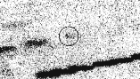

This is a copy of a
Press Release from
E.S.O.
Comet Halley
Comet Halley passes the halfway mark
Very distant image obtained with the ESO NTT
Eight years after the passage of Comet Halley in early 1986,
astronomers at the European Southern Observatory have succeeded in
obtaining an image of this famous
object at a distance of no less than 2,820 million km from the
Sun. The comet is now about as far away as giant planet Uranus. It
recently passed the halfway mark towards the most distant point of its
very elongated 76-year orbit.
The image shows the 6 x 15 km avocado-shaped nucleus as an extremely
faint point of light without any surrounding dust cloud. It appears
that the surface is now completely frozen and the comet has ceased to
emit dust and gas.
This observation was made with the ESO 3.58 metre New Technology
Telescope (NTT). It is by far the faintest and most distant image ever
recorded of this comet.

A difficult observation
The new Halley image was obtained in the course of an observational
programme by a small group of astronomers [1], aimed at the
investigation of distant solar system objects. The observation was
difficult to perform and is close to the limit of what is possible,
even with the NTT, one of the technologically most advanced
astronomical telescopes.
In fact, this observation may be compared to viewing a black golfball,
used during a late evening game, from a distance of 12,000 km.
At Halley's present, very large distance from the Sun, the intensity
of the solar light is over 350 times fainter than here on Earth. The
surface of the cometary nucleus is very dark; it reflects only 4 % of
the infalling sunlight. The amount of light received from Halley is
therefore extremely small: the recorded star-like image of the nucleus
is about 160 million times fainter than the faintest star that can be
seen with the unaided eye. A long exposure was needed to catch enough
light to show the object; even with the very sensitive SuSI CCD camera
at the NTT, the shutter had to be kept open for a total of 3 hours 45
minutes. During this time, of the order of 9000 photons from Comet
Halley were registered. The extreme faintness of its image is
illustrated by the fact that almost 1 million, or 100 times as many
photons were simultaneously received in this direction from the
luminous atmosphere of the Earth. They must be carefully "subtracted",
before the comet can be seen.
There is another complication. Due to the motions of
the comet and the Earth, the direction to the comet
(as seen against the stars in the background)
continuously changes during the observation. The
movement of the telescope must therefore be
accurately offset to "follow" the motion of the comet
in order to keep the sparse photons falling on the
same spot of the detector during the long exposure.
Is Halley now frozen?
The measured brightness of the Halley image (visual
magnitude 26.5 +- 0.2) closely corresponds to what
would be expected, if it results from sunlight being
reflected from the nucleus alone. This indicates that
there is little, if any, dust left around the nucleus
and it must be assumed that its surface layers are
now completely frozen.
The observation therefore shows that nothing is left
of the great mass of dusty material, estimated at 1
million tonnes, that was thrown out during the
completely unexpected outburst observed at ESO in
February 1991. Nevertheless, the astronomers intend
to continue to monitor the behaviour of Halley during
the next years - it cannot be excluded that this
comet may be good for another surprise!
Future observations with the VLT
Comet Halley will continue to move outwards through
the solar system at decreasing speed. Thirty years
from now it reaches the turning point (the
"aphelion") of its elongated orbit, almost 5,300
million kilometres from the Sun. Although the light
reflected from its nucleus will then be 15 times
fainter than at the present time, it should still be
possible to register its image with one of the 8.2
metre unit telescopes of the ESO Very Large Telescope
(VLT) during exposures of only a few hours' duration.
Comet Halley's next return to our neighbourhood will
take place in the year 2061.
Note:
- The members are Olivier Hainaut and Richard West
(ESO), Brian Marsden (Harvard-Smithsonian Center
for Astrophysics, Cambridge, Massachusetts, U.S.A.)
and Karen Meech (Institute for Astronomy, Honolulu,
Hawaii, U.S.A.). The Halley observation is also
described on a Circular of the International Astronomical
Union, published today.
PR 04/94 18 February 1994
[
ESO/La Silla
|
ESO/Garching
] [
O.Hainaut
|
Comments
]